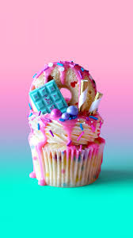

The earliest extant description of what is now often called a cupcake was in 1796, when a recipe for "a light cake to bake in small cups" was written in American Cookery by Amelia Simmons.
Cupcakes seem uniquely suited to our modern sensibilities. They’re portion-controlled, portable, easy to make in batches, open to lots of decorating strategies, tasty and can be inexpensive to make.
For the health concious, these 25 cupcake recipes don't just satisfy everyone from the chocoholic to the fruit fanatic; they're also much healthier than most bakery varieties.
Some of our all-time favorite recipes are for sweet, indulgent cupcakes. A cupcake is a treat that is sure to put a smile on your face.
Our best cupcake recipes can turn a dreary day around in no time at all. All you need are the ingredients, a stack of cupcake wrappers, and a bit of creamy frosting to sweeten up your day or brighten someone else’s.
We recommend whipping up a big batch of these indulgent cupcakes.